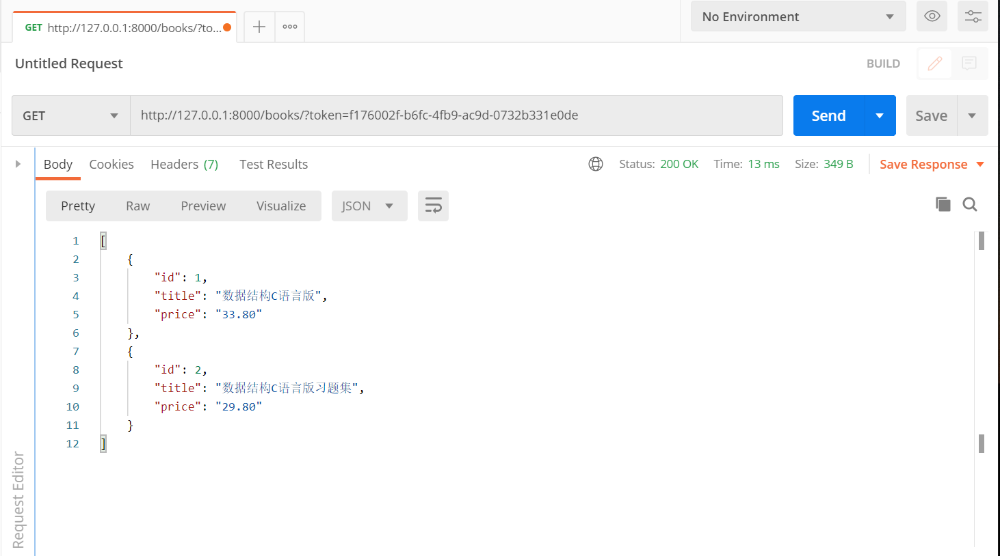

认证、权限和访问控制
一、认证
使用方法：
- 写一个类，继承
BaseAuthentication，重写authenticate()，在这个方法里写认证的逻辑。
- 认证通过，返回两个值，一个值最终给了Requet对象的user，
-
认证失败，抛异常：APIException或者AuthenticationFailed
-
使用
- 全局使用
- 局部使用
- 认证可以有多个，从左到右依次执行
1. 准备
准备用户数据
1
2
3
4
5
6
7
8
9
10
11
12
13
14
15
16
17
18
19
20
21 | # models.py
from django.db import models
# Create your models here.
class Book(models.Model):
title = models.CharField(max_length=32, verbose_name="书名")
price = models.DecimalField(max_digits=8, decimal_places=2, verbose_name="价格")
class User(models.Model):
username = models.CharField(max_length=32)
password = models.CharField(max_length=32)
user_type = models.IntegerField(choices=((0, '超级用户'), (1, '普通用户')))
class UserToken(models.Model):
token = models.CharField(max_length=64)
user = models.OneToOneField(to='User')
|
2. 自定义认证类
1
2
3
4
5
6
7
8
9
10
11
12
13
14
15
16
17
18
19
20 | # auth.py
from rest_framework.authentication import BaseAuthentication
from rest_framework.exceptions import AuthenticationFailed
from app.models import UserToken
class MyAuthentication(BaseAuthentication):
def authenticate(self, request):
# 认证逻辑，如果认证通过，返回两个值
# 如果认证失败，抛出AuthenticationFailed异常
token = request.GET.get('token')
if token:
user_token = UserToken.objects.filter(token=token).first()
# 认证通过
if user_token:
return user_token.user, token
else:
raise AuthenticationFailed('认证失败')
else:
raise AuthenticationFailed('请求地址中需要携带token')
|
3. 使用
3.1 局部使用
在视图类中，给需要认证的视图加上authentication_classes = [MyAuthentication]
1
2
3
4
5
6
7
8
9
10
11
12
13
14
15
16
17
18
19
20
21
22
23
24
25
26
27
28
29
30
31
32
33
34
35
36
37 | from app import models
from app.serializers import BookSerializer
from rest_framework.viewsets import ModelViewSet
from rest_framework.views import APIView
from rest_framework.response import Response
import uuid
from app.auth import MyAuthentication
class BooksView(ModelViewSet):
authentication_classes = [MyAuthentication]
queryset = models.Book.objects
serializer_class = BookSerializer
class TestView(APIView):
authentication_classes = [MyAuthentication]
def get(self, request):
return Response({'username': request.user.username})
class LoginView(APIView):
def post(self, request):
username = request.data.get('username')
password = request.data.get('password')
user = models.User.objects.filter(username=username, password=password).first()
if user:
# 登陆成功,生成一个随机字符串
token = uuid.uuid4()
# 存到UserToken表中
# update_or_create有就更新，没有就新增
models.UserToken.objects.update_or_create(defaults={'token': token}, user=user)
return Response({'status': 100, 'msg': '登陆成功', 'token': token})
else:
return Response({'status': 101, 'msg': '用户名或密码错误'})
|

3.2 全局使用
| REST_FRAMEWORK = {
"DEFAULT_AUTHENTICATION_CLASSES": ["app.auth.MyAuthentication", ]
}
|
3.3 局部禁用
在视图类中加上authentication_classes=[]
| class LoginView(APIView):
authentication_classes=[]
...
|
4. 源码分析
二、权限
使用方法：
- 写一个类，继承
BasePermission，重写has_permission
- 如果权限通过，就返回True，不通过就返回False
1. 自定义权限
1. 写一个权限的类
1
2
3
4
5
6
7
8
9
10
11
12
13 | # auth.py
from rest_framework.permissions import BasePermission
class UserPermission(BasePermission):
def has_permission(self, request, view):
# 不是超级用户，不能访问
# 由于认证已经过了，request内就有user对象了，当前登录用户
user = request.user # 当前登录用户
if user.user_type == 0:
return True
else:
return False
|
2. 使用
1. 局部使用
在视图文件中导入自定义的认证类，在视图类中加上permission_classes = [自定义认证类名]
1
2
3
4
5
6
7
8
9
10
11
12
13
14
15 | # view.py
from app.auth import MyAuthentication, UserPermission
class BooksView(ModelViewSet):
authentication_classes = [MyAuthentication]
permission_classes = [UserPermission]
queryset = models.Book.objects
serializer_class = BookSerializer
class LoginView(APIView):
...
class TestView(APIView):
...
|
2. 全局使用
| # settings.py
REST_FRAMEWORK = {
"DEFAULT_AUTHENTICATION_CLASSES": ["app.auth.MyAuthentication", ],
'DEFAULT_PERMISSION_CLASSES': [ # 加上自定义的认证类
'app.auth.UserPermission',
],
}
|
3. 局部禁用
2. 内置权限
使用前提：用了Django自带的auth模块
1. 使用流程
1. 创建一个超级管理员用户
| python manage.py createsuperuser
|
2. 写视图类
视图文件中导入自带的认证类和权限类，并在视图中使用
| # views.py
from rest_framework.authentication import SessionAuthentication
from rest_framework.permissions import IsAdminUser
class SalaryView(APIView):
authentication_classes = [SessionAuthentication, ]
permission_classes = [IsAdminUser, ] # 源码：bool(request.user and request.user.is_staff)
def get(self, request, *args, **kwargs):
return Response('管理员登录，有权限查看')
|
3. 管理员登录到admin，再访问SalaryView就有权限，
4. is_staff字段值为0的没有权限访问
三、访问频率
1. 未登录用户限制
1.1 全局限制
| # settings.py
REST_FRAMEWORK = {
'DEFAULT_THROTTLE_CLASSES': (
'rest_framework.throttling.AnonRateThrottle',
),
'DEFAULT_THROTTLE_RATES': {
'anon': '3/m',
}
}
|
1.2 局部限制
| REST_FRAMEWORK = {
'DEFAULT_THROTTLE_RATES': {
'anon': '3/m',
}
}
|
| # views.py
class TestView(APIView):
authentication_classes=[]
permission_classes = []
throttle_classes = [AnonRateThrottle] # 局部使用
def get(self,request,*args,**kwargs):
return Response('OK')
|
2. 登录用户限制
使用前提：使用Django的admin
2.1 全局限制
| # settings.py
'DEFAULT_THROTTLE_CLASSES': (
'rest_framework.throttling.UserRateThrottle'
),
'DEFAULT_THROTTLE_RATES': {
'user': '10/m',
}
|
2.2 局部限制
| # views.py
class TestView(APIView):
authentication_classes=[]
permission_classes = []
throttle_classes = [UserRateThrottle] # 局部使用
def get(self,request,*args,**kwargs):
return Response('OK')
|